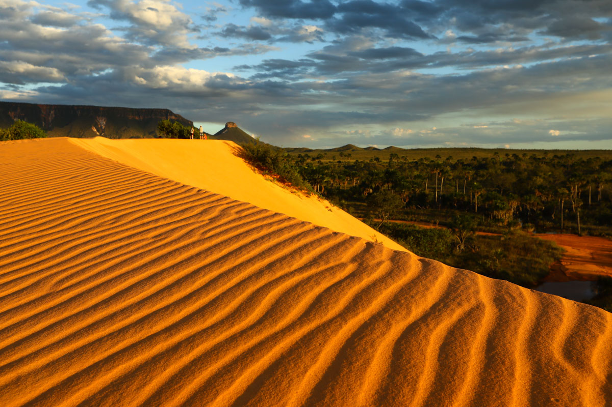
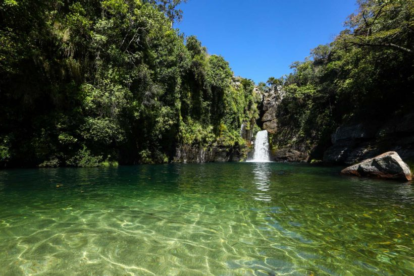
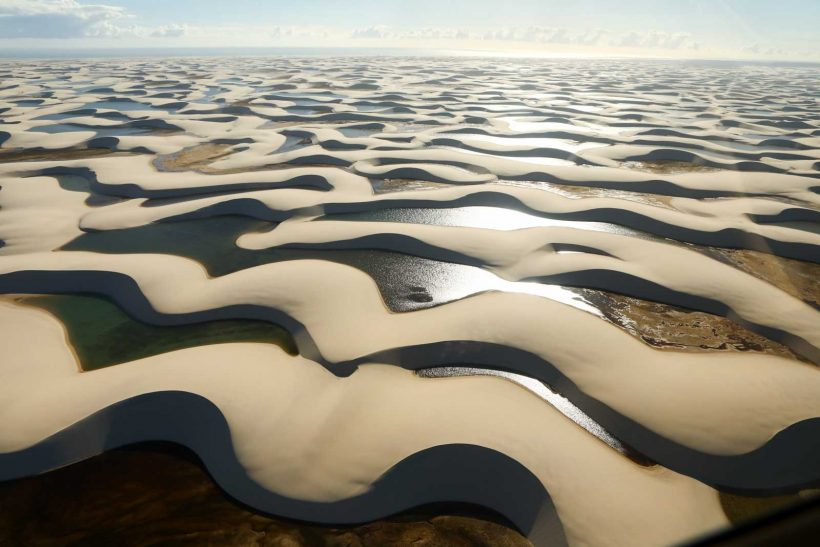

Viagem
Lugares para viajar em junho
Junho é um ótimo mês para viajar para dezenas de cidades mundo afora, independentemente do seu orçamento e da vontade de viajar dentro do Brasil ou fora do país. Veja nossa lista e confira todas as nossas sugestões de lugares para viajar em junho!

1 - Jalapão, Tocantins
O Jalapão reserva aos visitantes paisagens arrebatadoras em meio à imensidão de 34 mil quilômetros quadrados de área preservada, tudo permeado por veredas, chapadões e, diferente do que parece à primeira vista, muita água. Prepare-se para o intenso sol e tenha certeza de que sempre haverá um fervedouro ou um rio para aplacar o calor no meio do caminho.

2 - Chapada dos Veadeiros, Goiás
A Chapada é um convite irrecusável aos amantes do ecoturismo. A região, que engloba oito municípios do interior de Goiás, tem como principais bases de apoio para os turistas a cidade de Alto Paraíso de Goiás, a Vila de São Jorge e Cavalcante. Grande parte das atrações da região está concentrada nas três localidades, entre elas o Parque Nacional da Chapada dos Veadeiros e quedas d’água espetaculares, como a Cachoeira Santa Bárbara, que se tornou famosa pela água em tons de azul Caribe. Não faltarão opções de banho nos dias em que você estiver por lá.

3 - Lençois Maranhaenses, Maranhão
A areia branca e fina marca o paradisíaco caminho percorrido pelos viajantes em meio ao Parque Nacional dos Lençóis Maranhenses. As lagoas de água doce entre as dunas formam um cenário único em todo o mundo e é impossível não se emocionar ao chegar no topo da paisagem e ver a imensidão dos Lençóis Maranhenses. O bom é que, a cada nova porção de água entre as dunas, a sensação de estar no paraíso se repete. E melhor ainda é saber que são centenas de lagoas, em tons de azul e verde, capazes de fazer todo viajante feliz! E ainda possui das melhores praias do Brasil
